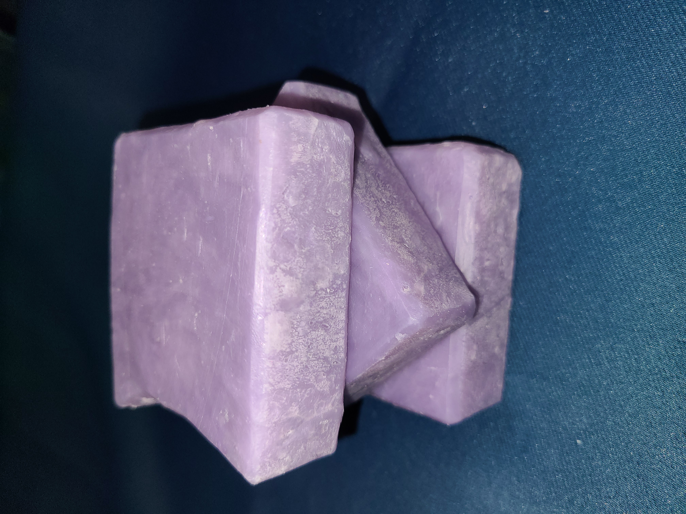
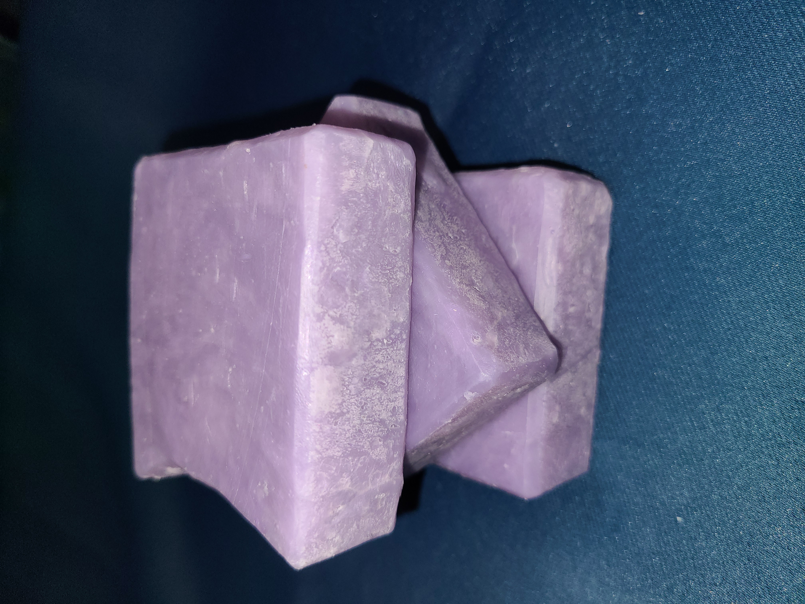

Sea Minerals
Experience the refreshing essence of the ocean with our handmade "Sea Minerals" soap. Crafted with care, this luxurious soap envelops you in a soothing, aquatic scent reminiscent of a gentle sea breeze.
Each bar provides a revitalizing and invigorating cleanse that leaves your skin feeling soft, hydrated, and rejuvenated. Indulge in the tranquil embrace of the sea with every wash..
 

Liliac
Indulge in the delicate fragrance of our handmade "Lilac" soap. Each bar is infused with the enchanting scent of blooming lilacs, creating a serene and uplifting bathing experience.
Crafted with natural ingredients, this luxurious soap gently cleanses and nourishes your skin, leaving it soft, smooth, and beautifully scented. Embrace the essence of springtime with every use.